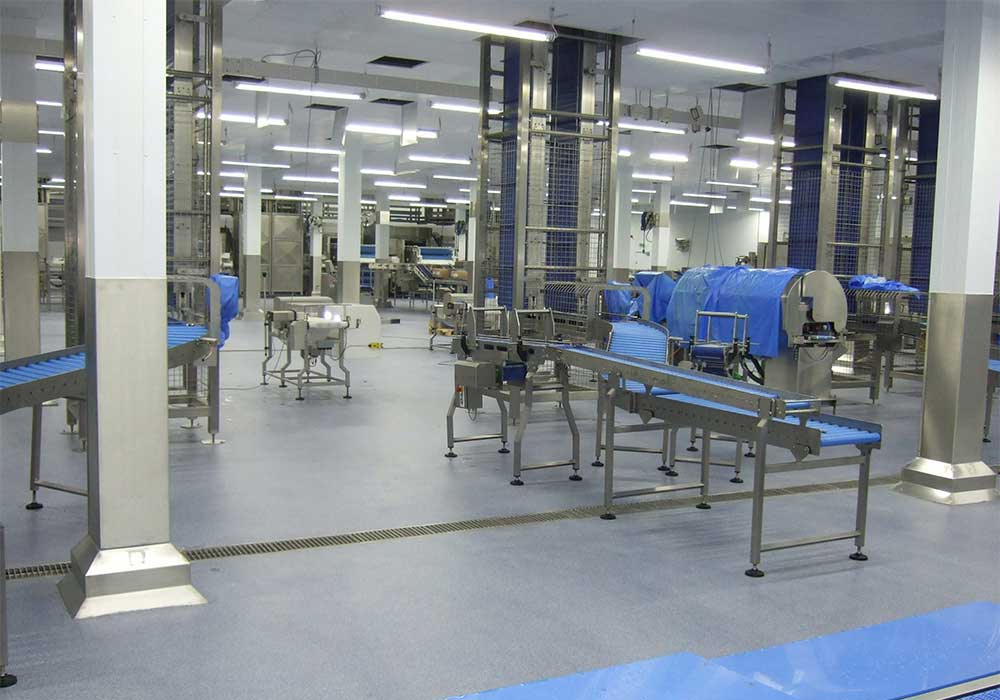

AcryliCon Décor System
4mmQuartz filledTrowel appliedCoved skirting
A 4mm quartz-filled, trowel-applied floor coating with excellent slip resistance, longevity and cleanability. Coved skirting can be produced as part of the system for a fully hygienic, seamless finish.
Ideal for — food & fish production, butchers, pharmaceutical, hospitality
System details